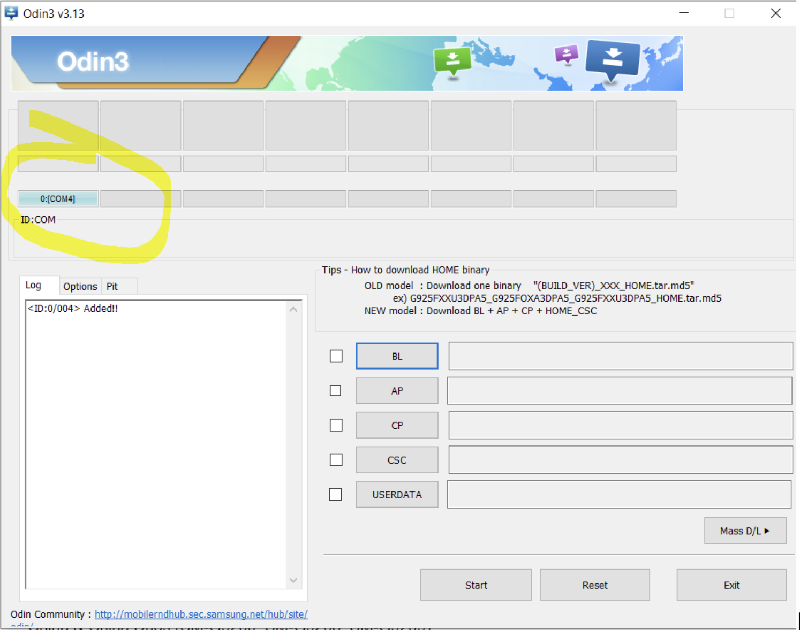

Linux
Init is the process that spawns other processes and usually has pid 1. /etc/inittab can be used to set run level for the systems. /etc/rc.d has a collection of files that define what services are running at what level. This information can also be viewed with a chkconfig command.
Run Levels
| Run Level | Mode | Action |
|---|---|---|
| 0 | Halt | Shuts down system |
| 1 | Single-User Mode ❗️ | Does not configure network interfaces, start daemons, or allow non-root logins. Can be used to boot to the super user account and change its password without knowing the old one. |
| 2 | Multi-User Mode | Does not configure network interfaces or start daemons. |
| 3 | Multi-User Mode with Networking ❗️ | Starts the system normally. Servers usually run at this level. |
| 4 | Undefined | Not used/User-definable |
| 5 | X11 | As runlevel 3 + display manager(X), main for desktop machines. |
| 6 | Reboot | Reboots the system, shuts down all services when the system is being rebooted |
[1]
Android
What’s rooting?
Installing some program like su on the device to raise the privileges on the device. Requires patching the bootloader of installing a fully rooted OS image as well. Rooting is highly specific to device version.
Why to root?
Some apps don’t work otherwise, like VPN, Packet sniffers, SSL pinning disablers and etc, which are required for testing.
Samsung Galaxy S6 Example
Tools 🧰 needed:
Odin is a tool for troubleshooting and managing firmware on Samsung devices. It’s installed on the PC and is used here to install custom patched bootloader;
TWRP (custom patched bootloader which makes rooting itself possible but is not the rooting mechanism by itself). TWRP is a patched custom bootloader that allows installing rooting software. We install it on the device via Odin to be able to root the phone later.
Samsung Kies is like iTunes for Samsung. It has many features but we install it here simply to easy install required drivers.
Magisk is a tool, that performs rooting itself (installing su on the device). It is installed from TWRP bootloader menu and after installation and booting normally into the system you can find a Magisk Manager application on the device to control which apps are granted root privileges and also if you need to hide the fact the phone is rooted. It’s downloaded on the PC and then copied to the device via adb tool without unzipping it.
Developer’s mode. It’s the mode you can turn on on an Android device. Allows several useful settings to be used including the one we actually need - USB debugging. There are some differences between devices, but for this device it’s the following: Settings -> About device -> Software info -> Build number -> tap 7 times until the mode is enables.
USB debugging. It’s an option when Developer’s mode is on. It allows connecting to the phone over USB and using adb for lot’s of useful staff. To turn it on go to Settings -> Developer Options -> USB debugging -> on.
Prerequisites:
- Download Odin from here: https://samsungodin.com.
- Download TWRP here, tar archive.
- Download Samsung Kies here.
- Download Magisk zip file, latest stable version. Here is the root link in case you need another version. And here is the version used for this phone by me.
- Enable Developer’s mode
- Turn on USB debugging
- For some devices (like this one) also enable custom OEM switch in the Developer’s settings as well.
- To find out whether the phone is of international model, turn it over and find the serial number. The serial number is of the following style: SM-G920FD. Check this number against the list here: https://twrp.me/samsung/samsunggalaxys6.html.

Troubleshooting
❓ Problem: Some of the links don’t open
✍️ Fix: Try using VPN
Problem ❓: None knew the PIN code
Fix ✍️: Enter the recovery mode by pressing Volume Increase + Home + Power Buttons. There I’ve chosen “factory reset” and then restart.
Problem ❓: Unable to turn off the phone without a PIN
Fix ✍️: Discharge the phone manually.
Problem ❓: Bootloop, i.e. the phone stuck on Samsung logo screen.
Fix 1 ✍️: Things I’ve tried to solve the issue can be viewed here: https://youtu.be/vRo4cMxqd7U. Neither of the steps helped, so I’ve started overwriting the bootloader with a custom version for rooting.
Fix 2 ✍️: Wait really long for the device to boot completely. First boot after factory reset or twrp installation may need several minutes.
Rooting Steps
📲 Restart the phone and enter the Download mode (Volume Decrease + Home + Power Buttons).
🖥️ Open Odin (note the ID:COM bar is not empty). If it is, the phone is not seen by the system. It’s supposed to look like this:

Click Options tab in Odin, check Auto Reboot and F. Reset Time, uncheck everything else. Click AP button and find your TWRP tar file you’ve downloaded during Prerequisites steps.
📲 Make sure the phone is charged 80% or above. Enter the Download mode with Volume Decrease + Home + Power Buttons pressed.
💻 In Odin click Start. Wait until the phone starts to reboot. You’ve installed custom bootloader, if you see “Succeded” in Log tab in Odin. Be quick!
Problem: 📲 Message on the phone “Downloading. Do not turn off the target” + Odin doesn’t see the phone. The phone is not rebooted. Odin cannot do anything.
Fix 1: Install Samsung USB drivers (https://www.samsung.com/in/support/kies/) on PC + restart PC.
Fix 2: Find another cable
📲 Volume Increase + Home + Power, then release the Power button while the main logo is on the screen. You’ll enter the TWRP menu.
📲 Click Install button, find Magisk.zip on the phone (in this example, directly on sdcard). Select reboot after install option (or something alike). Wait for the software to be installed. TWRP might ask to install its app. Say yes.
💻 After all the installations and booting normally into the system, open adb shell and try su options. The message o the device from Magisk will ask whether you want to grant the shell privileged permissions. Click ok and you are done. The phone is rooted.
Samsung Galaxy J1, 2016 Example
Prerequisites
- Download Odin from here.
- Download TWRP
- Download Samsung Kies from here.
- Download Magisk zip file, latest stable version. Here is the root link in case you need another version. And here is the version used for this phone by me.
- Enable Developer’s mode and then USB debugging first. Activate Developer’s mode on the 📲. Settings 🡪 About device 🡪 Software info 🡪 Build number 🡪 tap 7 times until the mode is enables. Then go to Settings 🡪 Developer Options 🡪 USB debugging 🡪 on. For international version that’s all. For others – also enable custom OEM switch here. To find out whether the phone is of international model, turn it over and find the serial number. The serial number is of the following style:
SM-G920FD. Check this number against the list here.
Rooting
Problem ❓: None knew the PIN code
Fix ✍️: Enter the recovery mode by pressing Volume Increase + Home + Power Buttons. There I’ve chosen “factory reset” and then restart.
Problem ❓: Unable to turn off the phone without a PIN
Fix ✍️: Discharge the phone manually.
Problem: Bootloop, i.e. the phone stuck on Samsung logo screen.
Fix 1 ✍️: Things I’ve tried to solve the issue can be viewed here: https://youtu.be/vRo4cMxqd7U. Neither of the steps helped, so I’ve started overwriting the bootloader with a custom version for rooting.
Fix 2 ✍️: Wait really long for the device to boot completely. First boot after factory reset or twrp installation may need several minutes.
📲 Restart the phone and enter the Download mode (Volume Decrease + Home + Power Buttons).
💻 Open Odin (note the ID:COM bar is not empty). If it is, the phone is not seen by the system. It’s supposed to look like this:
Click Options tab in Odin, check Auto Reboot, uncheck everything else. Click AP button and find your TWRP tar file you’ve downloaded (recovery.tar.md5) during Prerequisites steps.
📲 Make sure the phone is charged 80% or above. Enter the Download mode with Volume Decrease + Home + Power Buttons pressed.
💻 In Odin click Start. Wait until the phone starts to reboot. You’ve installed custom bootloader, if you see “Succeded” in Log tab in Odin.
Problem: 📲 Message on the phone “Downloading. Do not turn off the target” + Odin doesn’t see the phone. The phone is not rebooted. Odin cannot do anything.
Fix 1 ✍️: Install Samsung USB drivers (https://www.samsung.com/in/support/kies/) on PC + restart PC.
Fix 2 ✍️: Find another cable
📲 TWRP will be flashed and the device will reboot itself in recovery mode. 📲 Turn off the device, press Volume Increase + Home + Power Buttons to enter the TWRP menu. Click Install button, find Magisk.zip on the phone (in this example, directly on sdcard). Select reboot after install option (or something alike). Wait for the software to be installed. TWRP might ask to install its app. Say yes.
💻 After all the installations and booting normally into the system, open adb shell and try su options. The message on the device from Magisk will ask whether you want to grant the shell privileged permissions. Click ok and you are done. The phone is rooted.
iOS
Booting Process
When an iDevice is started, two separate booting processes are taking place: booting of Application Processor and booting of Secure Enclave.
- Booting of Application Processor. Meaning, without Secure Enclave. During each stage, the current code checks the integrity of the following one. The stages are:
- BootROM. BootROM is an immutable code (i.e. it can’t be changes for it’s hardcoded on the chip during manufacturing). Therefore, since it can’t be changed, it’s implicitly trusted by other parts of the system. It’s called root of trust.BooROM contains root certificates of Apple that are used to check the integrity of the code that follows. This portion is read-only. If there is a vulnerability in this code, Apple won’t be able to fix it, since they will need to revise hardware. There are two BootROMs: old (before 2009) and new (after 2009). The first one has 0x24000 Segment Overflow that allowed a jailbreak. Read about different BootROM versions.
- LLB
- iBoot
- Kernel
- Booting of Secure Enclave.
Types of jailbreaking
- Tethered jailbreaks don’t persist through reboots, so re-applying jailbreaks require the device to be connected (tethered) to a computer during every reboot. The device may not reboot at all if the computer is not connected.
- Semi-tethered jailbreaks can’t be re-applied unless the device is connected to a computer during reboot. The device can also boot into non-jailbroken mode on its own.
- Semi-untethered jailbreaks allow the device to boot on its own, but the kernel patches (or user-land modifications) for disabling code signing aren’t applied automatically. The user must re-jailbreak the device by starting an app or visiting a website (not requiring a connection to a computer, hence the term untethered).
- Untethered jailbreaks are the most popular choice for end users because they need to be applied only once, after which the device will be permanently jailbroken.
What’s jailbreaking?
Why jailbreaking?
How to jailbreak
Option 1. Easy, no PC needed.
OutdatedAirplane mode on, plugged into a power supply. Go to https://silzee.com/, choose a jailbreak version (should correspond to the device’s iOS version), tap “Get”. After the application is installed, go to General 🡪 Profiles and Device Management 🡪 Choose your jailbreak app, tap 🡪 Trust. Then open the jailbreaking app. If the app supports some jailbreaking settings, set them, then press “Jailbreak”. See additional info here: https://jailbreaktutorials.github.io/jailbreak-ios-10-ios-10-2-iphone-tutorial-yalu/
Option 2. More complicated. PC needed.
If the website didn’t have a jailbreaking tool for you version of iOS, go to https://www.jailbreak-me.info/check-jailbreak/ and check whether jailbreaking for your iOS exists. If so, go to the jailbreaking app’s website and follow the instructions.
For example, for Phoenix for 9.3.5, the steps were as follows:
- Go to Phoenix website https://phoenixpwn.com/.
- Download Cydia Impactor from http://www.cydiaimpactor.com/.
- Open Cydia, drag jailbreak *.ipa (in this example – Phoenix) to Cydia window.
- When prompted, enter your AppleID email (login). Don’t enter the password! The password Cydia Impactor is asking for is not the password for your AppleID! See below (
Error provision.cpp:150). - This will install the jailbreaking application on the device. After the installation is complete, open the application on the iDevice and tap “jailbreak”.
Possible problems encountered:
⛔️ Problem: When trying to install an app using Cydia, an error might pop up: provision.cpp:150.
✍️ Fix: See here or read below: http://www.iphonehacks.com/2016/08/fix-provision-cpp150-error-jailbreaking-ios-9-3-3.html Log into https://appleid.apple.com Scroll down to the Security section and click on the Edit button. In this section, find the “APP-SPECIFIC PASSWORDS” part and then click on Generate Password. Enter a name for the password, which could be anything like “PanguJailbreak” and then click on the Create button. Copy the password that is generated. Now, when Cydia Impactor asks you to enter your Apple ID password, use the password generated in the last step.
Option 3. Windows machine required.
Jailbreak detection bypass. Use xCon tool (find in Cydia). Stored in repo http://xcon.crazy.net/. Note: Xcon didn’t work for me.
Add it to Cydia repo list. https://kubadownload.com/news/jailbreak-bypass.
On iPhone 5S (iOS 10) add this repo https://ryleyangus.com/repo/ to Cydia and install package Liberty (not lite, normal Liberty).
ssh root@[device IP]
# enter default password 'alpine'
passwd # change default password
Option 4.
This one will only work up to iOS 13 at the moment of this writing (the latest OS at the moment is 14.4.2). The option requires 3UTools which is available from here, iDevice connected via USB and a Windows machine (the only host OS supported by this tool).
Exploits
You may read about different exploits, used to perform jailbreak on the website in the technical reference section.